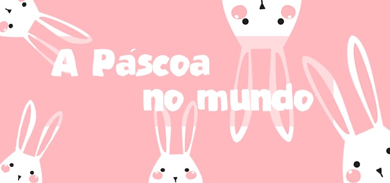

→Todos os anos, em meados de março ou abril, milhares de pessoas ao redor do mundo comemoram o feriado de Páscoa, a celebração da Ressurreição de Jesus Cristo.
No Brasil, a tradição da Quaresma, Domingo de Ramos, o peixe na Sexta-feira Santa e os ovos e coelhos de chocolates já é bem conhecida por todos.
Mas em cada parte do mundo, a Páscoa é comemorada de uma maneira diferente.

→A divertida tradição na Bulgária consiste em quebrar a casca do ovo (cozido e pintado) em outro ovo, mas sem danificar a sua própria casca.
Aquele que consegue o feito será bem-sucedido no próximo ano, além disso as famílias comemoram com um cordeiro assado como prato principal, Kozunak e outras delícias que você encontrará por lá.
Os poloneses possuem um objeto diferente para representar a Páscoa.
Trata-se de um cordeiro talhado em madeira e alocado no centro da mesa no domingo de Páscoa.
Todos os feriados e datas festivas da Polônia são coloridos e cheios de rituais.
Como os ovos pintados com galos, galinhas e outros animais característicos de cada região, conta também com uma cesta de alimentos benzidos com Cordeiro, raiz-forte, babka (um bolinho) e outras delícias salgadas por lá.
Uma quantidade nada modesta de ovos é utilizada para celebrar a Páscoa na França.
Cerca de 15 mil ovos são usados para preparar o tradicional omelete de Páscoa.
<<<<<<<<<<<<<<<<<<<<<<<<<<<<<<<<<<<<<<<<<<<<<<<<<<<<<<<<<<<
→Semelhante à tradição do Halloween, na Suécia as crianças saem na Terça-feira Santa para procurar doces.
Além disso, muitos suecos costumam criam seus próprios ovos de Páscoa e recheá–-los com chocolates e balas.
É incrível saber como é comemorada a páscoa na Espanha, pois a celebração da Páscoa na Espanha é marcada, principalmente, pelas procissões.
Com apelo essencialmente religioso, os fieis fantasiam–-se de Romano, de Apóstolos e de Jesus e carregam sua cruz.
O peixe também não pode faltar no cardápio dos espanhóis, assim como a rabanada e o Osso de Santo.
>>>>>>>>>>>>>>>>>>>>>>>>>>>>>>>>>>>>>>>>>>>>>>>>>>>>>>>>>>>>
→A brincadeira tradicional na Escócia é uma competição entre as crianças. Elas rolam os ovos de galinha decorados por uma ladeira e o que chegar mais longe sem quebrar é o ganhador. A famosa corrida do ovo.
→Ovos e laços coloridos. É assim que descobrimos como é comemorada a páscoa na República Tcheca! Lá as crianças ganham varas de madeiras com laços coloridos, como amuleto da sorte. Para desejar felicidade e sorte, os meninos encostam nas pernas das meninas com os laços.
→Agora mudando de continente, os preços do chocolate na Austrália também são muito atrativos. A terra dos cangurus conta com mais uma delícia para os chocólatras de plantão: o Tim Tam, uma espécie de biscoito coberto com chocolate, com diversos recheios e que fica uma delícia quando tomado com um café!
→Enquanto no Brasil o coelhinho da Páscoa leva os ovos de chocolates para as crianças, na Nova Zelândia alguns caçadores saem para caçar os coelhinhos (e a caça não é de brincadeira).
→Quem distribui os ovos de Páscoa na Austrália é o Bilby, um marsupial nativo do país. A preferência por este mascote deve-se ao fato de que o coelho é considerado uma praga não controlada por lá.
→O Canadá além de ser um país maravilhoso, cheio de qualidades e gente muito bacana, é também um ótimo lugar para se comprar chocolates! Assim como a Europa e a Austrália, o país oferece chocolates de marca por um preço bem razoável. Tanto os chocolates, quanto os preços vão te fazer sentir vontade de passar sua próxima Páscoa por lá.
→O ritual Talciguines, onde pessoas fantasiadas imitam uma luta entre Jesus e o Diabo, é tradicionalmente realizado em Texistepeque, uma cidade próxima da capital. O vencedor da luta é sempre a pessoa do lado do bem.
→Nos Estados Unidos é realizada a verdadeira “caça ao ovo”. As crianças saem à procura dos ovos de chocolate pelo quintal. Em alguns lugares, os ovinhos são escondidos em praças públicas a caça torna-se um evento da comunidade.
Fórmulas Matemáticas. Equação do segundo grau: ax2+bx+c=0
Fórmula da água: H2O
Data para compra com desconto.
22/05/2022
22/05/2023
©®¢£¥€™∴∂ℑℵℜ∇⊕⊗øØ∈∉∅
#include <stdio.h>
int main(void)
{
printf("Olá Mundo !");
return 0;
}
♠♣♥♦♠♣♥♦♠♣♥♦♠♣♥♦♠♣♥♦♠♣♥♦♠♣♥♦♠♣♥♦♠♣♥♦♠♣♥♦♠♣♥♦♠♣♥♦♠♣♥♦♠♣♥♦♠♣♥♦♠♣♥♦♠♣♥♦♠♣♥♦♠♣♥♦♠♣♥♦♠♣♥♦♠♣♥♦♠♣♥♦♠♣♥♦♠♣♥♦♠♣♥♦♠♣♥♦♠♣♥♦♠♣♥♦♠♣♥♦♠♣♥♦